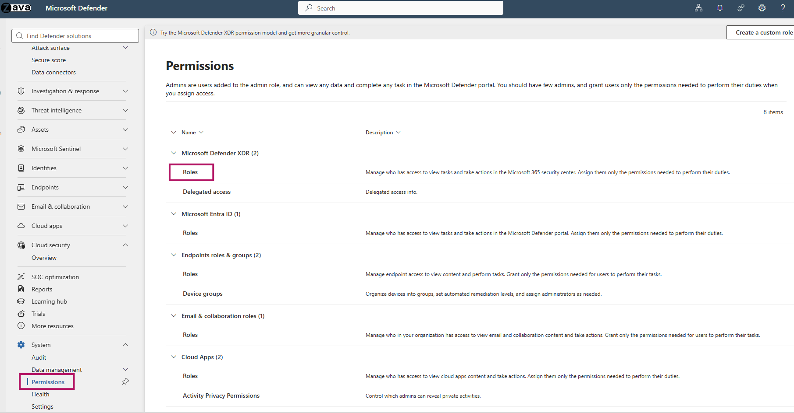
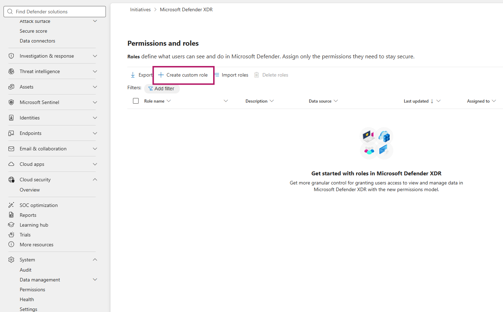
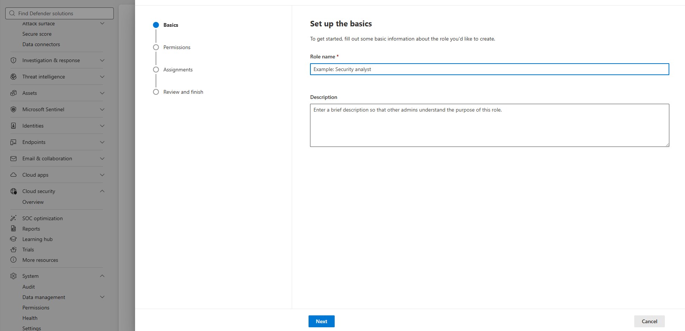
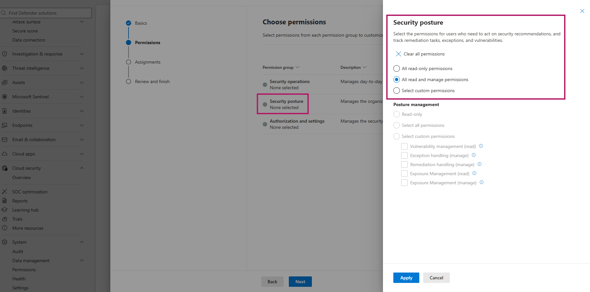
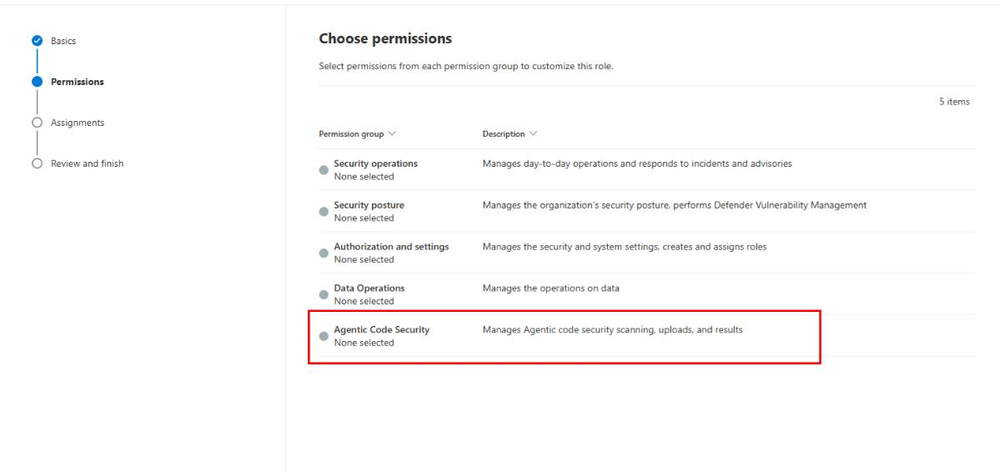
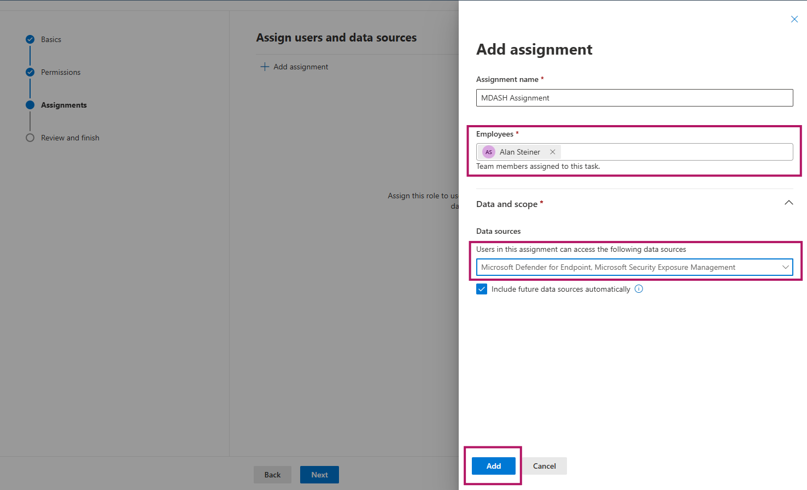
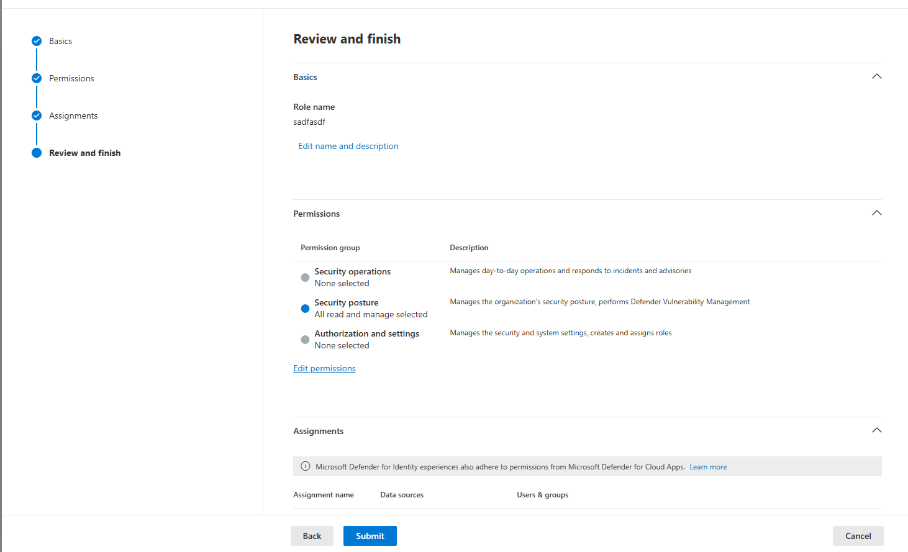

권한 설정 (RBAC)
MDASH 프라이빗 프리뷰의 첫 단계(Step 0) — Defender 통합 RBAC로 Agentic 코드 보안에 필요한 커스텀 역할·권한을 부여합니다. 이 권한을 먼저 부여한 뒤 온보딩 시작(진입점·약관 수락)으로 넘어갑니다. 전체 설정 단계와 사전 요구사항은 개요를 참고하세요.
권한 및 커스텀 역할 (RBAC)
Microsoft Defender 통합 역할 기반 액세스 제어(Unified RBAC · URBAC)를 사용해 MDASH(Agentic code security)에 필요한 권한을 부여하는 커스텀 역할을 생성합니다. 이 작업은 Defender 포털에서의 권한 설정까지만 다루며, Foundry 리소스 생성·모델 배포 등 Azure 온보딩은 다음 단계에서 진행합니다.
사전 준비 사항
- Entra ID 역할 — 커스텀 역할을 생성하고 권한을 설정하려면 전역 관리자(Global Administrator) 또는 보안 관리자(Security Administrator) 역할이 필요합니다.
- 포털 접근 — Microsoft Defender 포털 접근 권한과 Defender 통합 RBAC(URBAC)가 활성화된 테넌트.
⚠️ Exposure Management 메뉴가 보이지 않는 경우 Defender 통합 RBAC가 활성화된 테넌트에서는 Entra ID의 Security Administrator 역할만으로는 Exposure Management(노출 관리) 메뉴가 표시되지 않을 수 있습니다. URBAC가 활성화되면 해당 워크로드 접근이 Entra 전역 역할이 아닌 URBAC 권한으로 제어되기 때문입니다. 이 경우 아래 절차에서 커스텀 역할에 Security posture > Posture management > Exposure Management(Read 이상) 권한을 반드시 포함해야 메뉴가 정상 표시됩니다.
설정할 권한 항목
커스텀 역할에 포함할 권한은 두 그룹으로 구성됩니다. 각 사용자에게 필요한 권한만 선택적으로 부여하세요.
① Exposure Management 접근 권한 — Security posture > Posture management
| 권한 | 레벨 | 용도 |
|---|---|---|
| Exposure Management | Read | Exposure Management 메뉴·인사이트 조회 — 메뉴 표시를 위해 필수 |
| Exposure Management | Manage | Exposure Management 인사이트 및 Secure Score 권장 사항 관리 |
② MDASH 운영 권한 — Agentic code security > AI Scan Security
| 권한 | 설명 | 용도 |
|---|---|---|
| Run scan (Manage) | AI 스캔 실행 | On-demand 또는 CLI 스캔 트리거 |
| Upload results (Manage) | AI 스캔 결과 업로드 | CLI 스캔 결과를 Defender에 업로드 |
| Scan results (Read) | 스캔 결과 조회 | 포털·이니셔티브에서 발견 항목 확인 |
| Scan results (Manage) | 스캔 결과 관리 | 발견 항목 분류(triage)·해제(dismiss)·관리 |
참고 Scan results (Read) 권한만으로는 Defender 포털 자체에 대한 접근 권한이 부여되지 않습니다. 포털에 접근하려면 Exposure Management (Read) 등 추가 권한을 함께 할당해야 합니다. 이러한 권한은 할당된 범위 내에서 MDASH 데이터 외의 다른 데이터에도 접근을 허용할 수 있습니다.
커스텀 역할 생성 절차
- Defender 포털에 로그인합니다.
- 탐색 창에서 System > Permissions를 선택합니다.

- Microsoft Defender XDR 아래에서 Roles > Create custom role을 선택합니다.

- Basics 탭에서 역할 이름과 설명을 입력합니다. (예:
MDASH-Scan-Operator)

- Choose permissions 화면에서 먼저 Security posture > Posture management를 확장한 뒤, Exposure Management 권한을 선택합니다. (메뉴 표시를 위해 최소 Read 필수, 관리가 필요하면 Manage 선택)

- 이어서 Agentic Code Security 권한 그룹을 확장합니다.

- AI Scan Security 아래에서 필요한 권한 수준을 설정합니다.
- AI 스캔 실행 허용 → Run scan (Manage)
- AI 스캔 결과 업로드 허용 → Upload results (Manage)
- 스캔 결과 조회 허용 → Scan results (Read)
- 스캔 결과 관리 허용 → Scan results (Manage)
- 권한을 검토한 후 Apply를 선택합니다.
- Next를 선택하여 Assign users and data sources로 이동합니다.
- Add assignment을 선택하고 사용자·그룹·데이터 소스를 구성합니다. 데이터 소스에서 Microsoft Defender for Cloud와 Microsoft Security Exposure Management가 모두 선택된 상태로 유지되어 있는지 확인하고(둘 중 하나라도 해제하면 역할 할당이 올바르게 작동하지 않습니다), Assignment name과 Employees(권한부여 사용자)를 지정합니다.

- Add를 선택하고 할당 내용을 검토한 뒤 Next를 선택합니다.
- 역할 세부 정보를 검토하고 Submit을 선택하여 역할 생성을 완료합니다.

권한 부여 원칙 각 사용자에게 필요한 권한만 부여하세요. 예를 들어 스캔을 실행만 하는 담당자에게는 Run scan (Manage), 결과만 확인하는 담당자에게는 Scan results (Read)만 부여합니다.
다음 단계 권한 설정을 마쳤으면 온보딩 시작으로 넘어가 이니셔티브 진입점에서 온보딩 플로우를 시작하고 약관을 수락합니다. 이후 Foundry 설정(리소스·모델 배포)을 거쳐 온보딩 완료(엔드포인트·Validate·Save)로 마무리합니다.